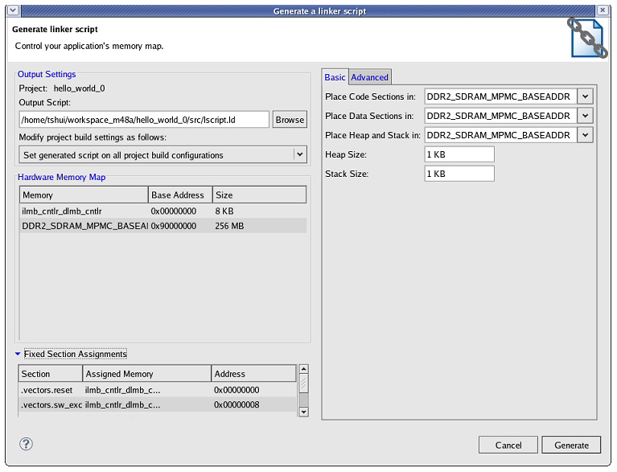
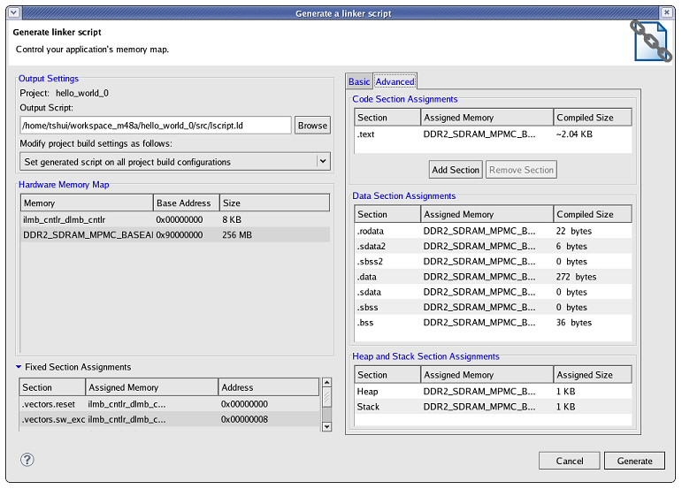

To generate a linker script for an application, do the following:


If you want to manually add the linker script for a managed make flow, do the following:
For standard make projects, add the linker script manually to your makefile linker options.